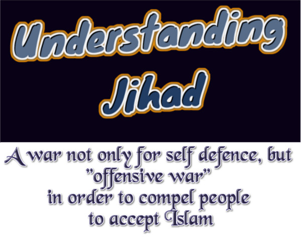

Today Muslims deceive by saying that Jihad is only allowed in "self-defense". They quote "only" this verse of Quran:
(Quran 2:190) Fight in the way of Allah those who fight you but do not transgress
What Muslims don't tell you is this that this verse (2:190) was revealed during the "earlier" period of Madinian life (i.e. 2 or 3 Hijri year), when Muslims were weak and it was not possible for them to go to Mecca and directly attack Kuffar (polytheists).
But as Muslims grew stronger, then offensive verses started revealing. And in the 9th Hijri year, when Muslims had already conquered Mecca and got absolute power, then the following Verses of Surah Tauba were revealed, which gave the "Licence to fight and kill" the Kuffar:
(Quran 9:5) So when the sacred months have passed away, then slay the idolaters wherever you find them, and take them captives and besiege them and lie in wait for them in every ambush, then if they repent and keep up prayer and pay the poor-rate, leave their way free to them;
Licence for fighting against the "people of the scripture (i.e. Jews and Christians)" was also given in this last Surah, but with one exception that they could pay the Jizya (i.e. tax) and save their life without accepting Islam. But polytheists were not given the option of the Jizya tax. They had either to accept Islam or be killed.
(Quran 9:29) Fight those who do not believe in Allah or in the Last Day and who do not consider unlawful what Allah and His Messenger have made unlawful and who do not adopt the religion of truth (i.e. Islam) from those who were given the Scripture (i.e. Jews/Christians), fight them till they [agree to] pay the exemption tax with a willing hand, after having been humiliated [in war].
So, these 2 verses of Surah Tauba were the final Orders of offensive Jihad, which were never abrogated. Today, Muslims hide these 2 verses and deny this "offensive Jihad". They are indeed dishonest.
If violent Jihad should only be pursued in self-defence, what was the justification for the early Muslim conquests of the Middle East, North Africa and Spain?
"Bin Baz" is the "Grand Mufti" of Saudi Arabia. In his book "Fatwas of Ibn Baz", volume 18, he writes (Online link):
Jihad is divided into two kinds; Jihad for making conquests and Jihad for self-defense, and both of them aim at conveying Allah's Religion, inviting people to it, taking people from darkness to the light, making Allah's Religion prevail in His Land and making (all and every kind of) worship for Allah (Alone)...
Allah (Glorified and Exalted be He) says in Surat Al-Anfal: And fight them until there is no more Fitnah (disbelief and polytheism, i.e. worshipping others besides Allâh) and the religion (worship) will all be for Allâh Alone [in the whole of the world].
And, Allah (Glorified and Exalted be He) says in Surat Al-Tawbah: Then when the Sacred Months (the 1st, 7th, 11th, and 12th months of the Islâmic calendar) have passed, then kill the Mushrikûn (See V.2:105) wherever you find them, and capture them and besiege them, and lie in wait for them in each and every ambush...
Also, it was reported in the Two Sahih (authentic) Books of Hadith (i.e. Al-Bukhari and Muslim) on the authority of Abu Hurayrah (may Allah be pleased with him) that the Prophet (peace be upon him) said: I have been ordered to fight against the people until they testify that none has the right to be worshipped but Allah and that Muhammad (peace be upon him) is Allah's Messenger, so if they perform all that, then they save their lives and property from me except for Islamic laws, and then their reckoning (accounts) will be done by Allah...There are many Hadiths in this regard. These noble Ayahs (Qur'anic verses) and authentic Hadiths indicate clearly that it is obligatory to perform Jihad against disbelievers and atheists, fight them, invite to Islam and fight them because they insist on disbelief and do so till they worship none but Allah and believe in His Messenger Muhammad (peace be upon him) and follow his commands knowing that unless they do so their blood and money will not be inviolable.
This includes Jihad for conquest and self-defense; with no exception but for those who abide by the Jizyah (poll tax required from non-Muslims living in an Islamic state) and its conditions as Allah (Glorified and Exalted be He) says: Fight against those who (1) believe not in Allâh, (2) nor in the Last Day, (3) nor forbid that which has been forbidden by Allâh and His Messenger Muhammad (صلى الله عليه وسلم) (4) and those who acknowledge not the religion of truth (i.e. Islâm) among the people of the Scripture (Jews and Christians), until they pay the Jizyah with willing submission, and feel themselves subdued ...
For others (i.e. others than people of scripture, means Kuffar), they should be fought till they embrace Islam as according to the sound of the two opinions held by scholars in this regard.
The Prophet (peace be upon him) fought the Arab till they embraced Islam in crowds (groups after groups) and he did not ask them (i.e. Kuffar) to pay Jizyah.
The Three Stages of Jihad in Islam:
━━━━━━━━━━━━━━━━━━The three Stages of Jihad in Islam were:
The first stage: to let Muslims perform Jihad, but without obligation as Allah (Glorified be He) says: Permission to fight (against disbelievers) is given to those (believers) who are fought against, because they have been wronged; and surely, Allâh is Able to give them (believers) victory
The second stage is asking Muslims to fight those who fight them and abstain from whoever abstains from fighting them. In this regard, Allah (Exalted be He) revealed this saying ...: And fight in the Way of Allâh those who fight you, but transgress not the limits. Truly, Allâh likes not the transgressors...
The third stage is to fight disbelievers and invade them in their lands so as to prevent Fitnah (disbelief and worshipping of others along with Allah) and ensure that worship is for Allah (Alone) so that good will prevail everywhere, Islam will spread, those who invite to disbelief will be eradicated and people will enjoy judgment by the fair Islamic Shari`ah and its fair teachings...
(And Allah says in Quran) Then when the Sacred Months (the 1st, 7th, 11th, and 12th months of the Islâmic calendar) have passed, then kill the Mushrikûn (See V.2:105) wherever you find them
And in Surat Al-Anfal: And fight them until there is no more Fitnah (disbelief and polytheism, i.e. worshipping others besides Allâh) and the religion (worship) will all be for Allâh Alone [in the whole of the world].
Some scholars viewed that the second stage that is represented in fighting those who fight Muslims, and abstaining from whoever abstains from fighting Muslims, was canceled as it was only practiced when the Muslims were weak, but after Allah (Exalted be He) made them strong and multiplied their number and resources, they were asked to fight whoever fights or whoever does not fight them so that the religion (worship) will all be for Allah alone and to pay Jizyah if they have to do that.
Other scholars see that the second stage was not cancelled and it can be applied in case of necessity. When Muslims become strong and are able to start fighting their enemies and perform Jihad in the cause of Allah, they have to do so, according the Ayah of Surat Al-Tawbah and its related meanings. But if they are not able to do so, they have only to fight whoever fights them or raises aggression on them and abstain from fighting whoever abstains from fighting them. This is according to the Ayah of Surat An-Nisa'. This viewpoint is sounder and worthier of acceptance than the viewpoint that says that this stage was abrogated. This viewpoint was chosen also by Ibn Taymiyyah (may Allah be merciful to him). Therefore, everyone who has the least amount of knowledge should know that modern writers or others who say that Jihad is only permissible for the purpose of defense is mistaken. The above-mentioned evidence is contrary to this saying and the correct way is what we mentioned as indicated by trustworthy scholars. Anyone who contemplates the biography of the Prophet (peace be upon him) and his companions (may Allah be pleased with them) in fighting against Mushriks (one who associates others with Allah in His Divinity or worship) will know that what we said accords with the above-mentioned Ayahs and Hadiths. May Allah guide us all!
So, there should be no more doubts after this clear Fatwa of Bin Baz and Ibn Taymiyyah.
And this is not limited to Saudia and Ibn Taymiyyah only, but let us see what esteemed Hanafi Jurist Imam al-Sarakhsi writes:
According to the majority of Scholars (Arabic "Jamhoor جمھور") it is not necessary to start Jihad only when Kuffar initiate it as a provocation, but if any non-Muslim state does not have any aggressive aims against any Muslim State, still it is "obligatory" for Muslims to fight against them.
Reference: Imam al-Sarakhsi, Sharah al-Kabir, volume 1, page 188 (link)
Another Hanafi Jurist, Imam al-Hammam writes in his book "Fath-ul-Qadeer" (link):
وقتال الکفار ... واجب وان لم یبدء ونا لان الادلۃ الموجبۃ لہ لم تقید الوجوب ببداء تہم....فتح القدیر ۱۲/۳۸۵
It is obligatory to attack the Kuffar, even if they don't fight against us, while there is no condition which says that war could only be fought against them when they first attack us.
Another esteemed Hanbali jurist Ibn Qudamah wrote (link):
If Muslims are weak and not in position to wage a war against the Kuffar, then in this case they are allowed to make a peace pact with them. Nevertheless, this pack should only be of short duration, while in case of permanent agreement, Muslims have to give up the orders of Jihad permanently. Some Scholars say that it is not allowed to make a peace agreement more than 4 months. (Reference: Book Al-Mughani by Ibn Qudamah, volume 9)
Imam al-Sarakhsi added to it (link):
The peace agreement with Kuffar will only be maintained till the time Muslim need it such as they don't have sufficient war power. But as soon as this situation changes, then it is obligatory to end this peace agreement and to wage Jihad against the Kuffar. (Reference: Al-Mubsoot by Imam al-Sarakhsi)
The Verse of "No Compulsion in Religion" has been abrogated:
In order to be seen as innocent, Muslims also quote very often the verse of "There is No Compulsion in religion".
(Quran 2:256) There is no compulsion in religion.
Once again Muslims don't tell the complete Truth, which is as under:
- Once again, this verse was revealed in the initial Madinian period (2 or 3 Hijri year). While final Verses of "offensive Jihad" were revealed later in Surah Tauba, when Muslims had already got power.
- Many Islamic Scholars believe that "No Compulsion" in this verse is referring only to the "People of Book" i.e. Jews/Christians will not be compelled to change their religion by paying Jizya (tax money) and feel subdued and humiliated (Verse 9:29).
- While some scholars say that this verse of "No compulsion" has been "ABROGATED" by the verse of sword (Verse 9:05)
Ibn Kathir writes in the commentary of verse 2:256 (link):
وقد ذهب طائفة كثيرة من العلماء، أن هذه محمولة على أهل الكتاب، ومن دخل في دينهم قبل النسخ والتبديل إذا بذلوا الجزية، وقال آخرون بل هي منسوخة بآية القتال، وإنه يجب أن يدعى جميع الأمم إلى الدخول في الدين الحنيف، دين الإسلام، فإن أبى أحد منهم الدخول فيه، ولم ينقد له، أو يبذل الجزية، قوتل حتى يقتل، وهذامعنى الإكراه، قال الله تعالى { سَتُدْعَوْنَ إِلَىٰ قَوْمٍ أُوْلِى بَأْسٍ شَدِيدٍ تُقَـٰتِلُونَهُمْ أَوْ يُسْلِمُونَ } [الفتح: 16] وقال تعالى: { يَٰأَيُّهَا ٱلنَّبِىُّ جَـٰهِدِ ٱلْكُفَّـٰرَ وَٱلْمُنَـٰفِقِينَ وَٱغْلُظْ عَلَيْهِمْ } [التوبة: 73] وقال تعالى: { يَٰأَيُّهَا ٱلَّذِينَ ءَامَنُواْ قَاتِلُواْ ٱلَّذِينَ يَلُونَكُمْ مِّنَ ٱلْكُفَّارِ وَلِيَجِدُواْ فِيكُمْ غِلْظَةً وَٱعْلَمُوۤاْ أَنَّ ٱللَّهَ مَعَ ٱلْمُتَّقِينَ }[التوبة: 123] وفي الصحيح: " عجب ربك من قوم يقادون إلى الجنة في السلاسل " يعني: الأسارى الذين يقدم بهم بلاد الإسلام في الوثائق والأغلال والقيود والأكبال، ثم بعد ذلك يسلمون، وتصلح أعمالهم وسرائرهم، فيكونون من أهل الجنة.
Large number of Scholars are of opinion that this verse (2:256) "There is no compulsion in religion" was meant only for the People of Book (i.e. only Jews and Christians will not be compelled to accept Islam), but they have to pay Jizyya.
While, other Scholars say that this verse of "No Compulsion" had been abrogated (even for the People of Book) through the verse of sword (verse 9:5)"...Therefore, all people of the world should be called to Islam. If anyone of them refuses to do so, or refuses to pay the Jizya they should be fought till they are killed. This is the meaning of compulsion.
Allah says in verse 48:16;"O Prophet, fight with them till the time they accept Islam."...
In the Sahih, the Prophet said: "Allah wonders at those people who will enter Paradise in chains", meaning prisoners brought in chains to the Islamic state, then they embrace Islam sincerely and become righteous, and are entered among the people of Paradise.
Please note, you will not find this part of Tafsir Ibn Kathir in the English Translation. It is due to the reason that Muslims have deliberately not translated the full Tafsir Ibn Kathir, and they intentionally removed those parts from the English translation, which could expose the real face of Islam.
And the largest Muslim Fatwa website "Islam Question Answer" writes (link):
The scholars explained that these two verses (i.e. the verse of No Compulsion) and other similar verses, have to do (only) with those from whom the jizyah may be taken, such as Jews, Christians and Magians (Zoroastrians). They are not to be forced, rather they are to be given the choice between becoming Muslim or paying the jizyah .
Other scholars said that this applied in the beginning, but was subsequently abrogated by Allaah’s command to fight and wage jihad. So whoever refuses to enter Islam should be fought when the Muslims are able to fight, until they either enter Islam or pay the jizyah if they are among the people who may pay jizyah. The kuffaar should be compelled to enter Islam if they are not people from whom the jizyah may be taken, because that will lead to their happiness and salvation in this world and in the Hereafter. Obliging a person to adhere to the truth in which is guidance and happiness is better for him than falsehood. Just as a person may be forced to do the duty that he owes to other people even if that is by means of imprisonment or beating, so forcing the kaafirs to believe in Allaah alone and enter into the religion of Islam is more important and more essential, because this will lead to their happiness in this world and in the Hereafter. This applies unless they are People of the Book, i.e., Jews and Christians, or Magians, because Islam says that these three groups may be given the choice: they may enter Islam or they may pay the jizyah and feel themselves subdued.
Some of the scholars are of the view that others may also be given the choice between Islam and jizyah, but the most correct view is that no others should be given this choice, rather these three groups are the only ones who may be given the choice, because the Prophet (peace and blessings of Allaah be upon him) fought the kuffaar in the Arabian Peninsula and he only accepted their becoming Muslim (otherwise he killed them). And Allaah says (interpretation of the meaning):
“But if they repent [by rejecting Shirk (polytheism) and accept Islamic Monotheism] and perform As-Salaah (Iqaamat-as-Salaah), and give Zakaah, then leave their way free. Verily, Allaah is Oft-Forgiving, Most Merciful”
[al-Tawbah 9:5]
He did not say, “if they pay the jizyah”. The Jews, Christians and Magians are to be asked to enter Islam; if they refuse then they should be asked to pay the jizyah. If they refuse to pay the jizyah then the Muslims must fight them if they are able to do so. Allaah says (interpretation of the meaning):
“Fight against those who (1) believe not in Allaah, (2) nor in the Last Day, (3) nor forbid that which has been forbidden by Allaah and His Messenger (Muhammad), (4) and those who acknowledge not the religion of truth (i.e. Islam) among the people of the Scripture (Jews and Christians), until they pay the Jizyah with willing submission, and feel themselves subdued”
[al-Tawbah 9:29]
And it was proven that the Prophet (peace and blessings of Allaah be upon him) accepted the jizyah from the Magians, but it was not proven that the Prophet (peace and blessings of Allaah be upon him) or his companions (may Allaah be pleased with them) accepted the jizyah from anyone except the three groups mentioned above.
The basic principle concerning that is the words of Allaah (interpretation of the meaning):
“And fight them until there is no more Fitnah (disbelief and polytheism, i.e. worshipping others besides Allaah), and the religion (worship) will all be for Allaah Alone [in the whole of the world]”
[al-Anfaal 8:39]
“Then when the Sacred Months (the 1st, 7th, 11th, and 12th months of the Islamic calendar) have passed, then kill the Mushrikoon (see V.2:105) wherever you find them, and capture them and besiege them, and lie in wait for them in each and every ambush. But if they repent [by rejecting Shirk (polytheism) and accept Islamic Monotheism] and perform As-Salaah (Iqaamat-as-Salaah), and give Zakaah, then leave their way free. Verily, Allaah is Oft-Forgiving, Most Merciful”
[al-Tawbah 9:5]
This verse is known as Ayat al-Sayf (the verse of the sword).
These and similar verses abrogate the verses which say that there is no compulsion to become Muslim.
And Allaah is the Source of strength.
Muhammad himself waged offensive Wars against the polytheists
Sahih Muslim, Book of Jihad (link) and Sahih Bukhari, Book of Manumission (link):
Ibn 'Aun reported:
I wrote to Nafi' inquiring from him whether it was necessary to extend (to the disbelievers) an invitation to accept (Islam) before meeting them in fight. He wrote (in reply) to me that it was necessary (only) in the early days of Islam. The Messenger of Allah made a raid upon Banu Mustaliq while they were unaware and their cattle were having a drink at the water. He killed those who fought and imprisoned others. On that very day, he captured Juwairiya bint al-Harith. Nafi' said that this tradition was related to him by Abdullah b. Umar who (himself) was among the raiding troops.
Earlier Muslims used to give a time of 3 days to the opponents to accept Islam, but later they even didn't invite the people towards Islam, but directly attacked them in order to get the spoils of war.
Whenever Muslims will get the power, they will, without doubt, repeat the "Sunnah" (holy practice) of their prophet and they will wage the offensive Jihad in order to forcefully convert people towards Islam. The Sooner the rest of the world understands it, the better it would be for humanity.



 Hassan Radwan
Hassan Radwan